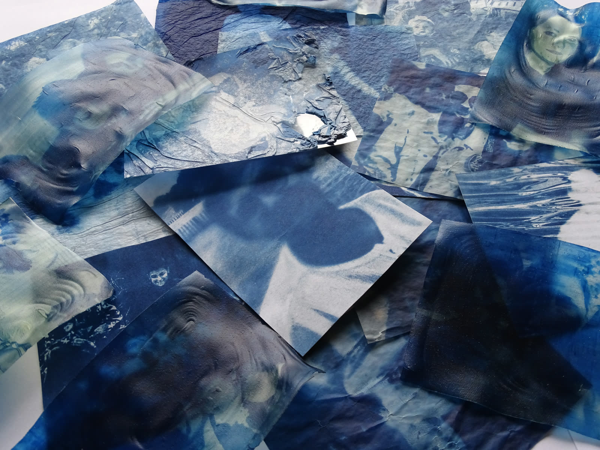

Disponible pour un stage — Lyon
Célia
Quadrado
Étudiante en Master 2 Cinéma Audiovisuel, parcours Études et Créations Photographiques, université Lyon 2 Lumière.
Photographie numérique, argentique et expérimentale.

À propos de moi
Travail autour de la mémoire, de la fragilité des images et des images d’archives.
Créativité artistique, capacité d’adaptation, dynamique, volontaire, sérieuse.
Capacités d’animation, d’encadrement, de transmission.
En cours
Master 2 Cinéma Audiovisuel
Parcours Études et Créations Photographiques — Lyon 2 Lumière
Recherche
Stages et missions photo
Médiation et production d’images
01 / Expériences
Expériences professionnelles
Photographie & médiation Autres expériences
Août 2026
Accompagnatrice Voyages Adaptés — accompagnatrice de personnes en situation de handicap en vacances
Avril 2026
Médiatrice lors d’une résidence sur les techniques anciennes de la photographie, Varagnes
Mars – Mai 2026
Participation à l’exposition en Corps, collaboration entre les étudiants de l’université Lumière Lyon 2 et les archives municipales de Lyon
Septembre – Décembre 2025
Participation au projet MACSUP neuvième édition, en collaboration avec le Musée d’art contemporain de Lyon
Septembre – Décembre 2025
Participation à l’exposition Images de ville, collaboration entre les étudiants de l’université Lumière Lyon 2 et les archives municipales de Lyon
Juin – Juillet – Août 2022 à 2025
Travail d’été en intérim (salaison, caisse...)
2024
Gestion de la communication et de la mise en avant du club de basket de Saint-Médard en Forez
Novembre 2023
Workshop réalisé dans le cadre d’un cours de photographie expérimentale, à l’Esad Saint-Etienne, en compagnie de Laurence Aëgerter
Septembre 2023
Photographe bénévole pour le trail de Saint-Médard en Forez
Avril 2023
Stage, d’une semaine, magasin Les photos d’Aurélien. Vente, accompagnement des clients dans le processus d’impression de leur photographie, accompagnement d’un cours de photographie, rencontre avec des artistes, photographes
Juillet 2020 – 2021 – 2022
Animatrice BAFA en centre de loisirs pour enfants de 4 à 12 ans. MJC Loisirs au Village St Médard en Forez. Animatrice en colonie pour enfants de 4 à 18 ans, La ligue de l’enseignement
02 / Formation
Formation
2025 – 2027
Master 2 cinéma audiovisuel, parcours Études et Créations Photographiques, université Lyon 2 Lumière — en cours
2021 – 2024
Obtention d’une licence arts plastiques, Université Jean Monnet Saint-Étienne, options photographie, art numérique, photographie expérimentale, photographie argentique, cinéma italien,...
2021
Obtention du baccalauréat général, option Science de l’ingénieur, physique chimie, Lycée des Horizons Chazelles-Sur-Lyon
2021
Obtention du BAFA
03 / Compétences
Compétences & intérêts
Savoir-faire
- Photographie90%
- Développement argentique85%
- Suite Adobe75%
- Analyser et théoriser80%
- Anglais65%
Pratiques
Photographie numérique, argentique et expérimentale. Cyanotype, charbon, pellicule.
Centres d’intérêt
04 / Contact